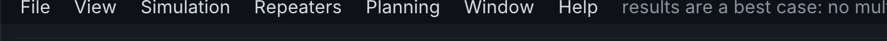
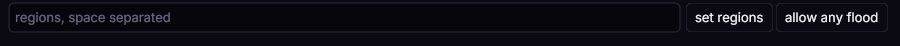
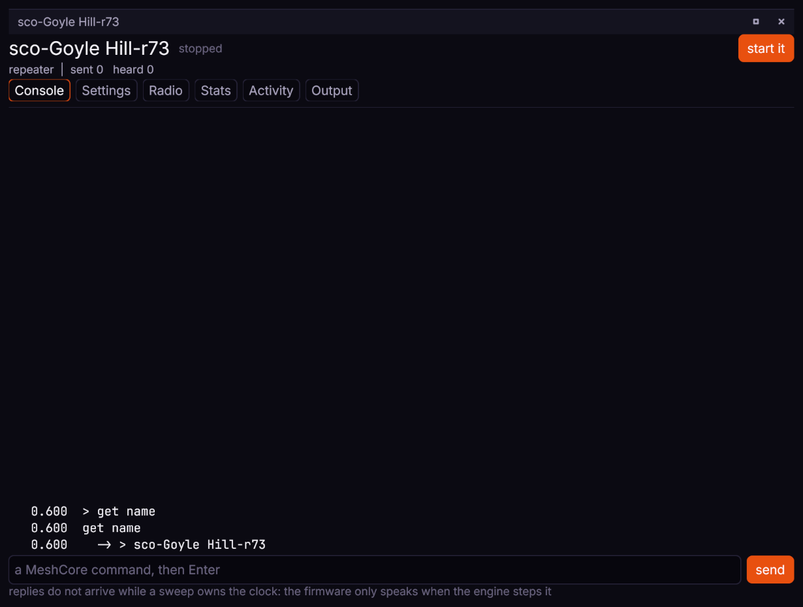
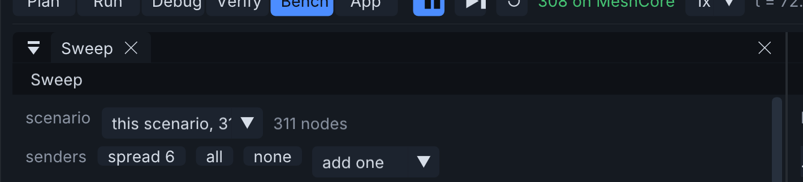
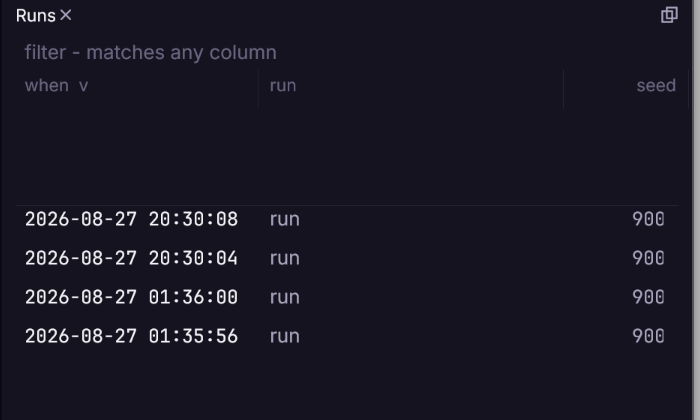

Testing a repeater
A worked example from an empty workbench to an answer about a real repeater: does adding it help, and what does it cost the network.
1. Load a network#
File, then Open a saved network, and choose fixture-scotland-strict. 161 real nodes from ScotMesh with the transport regions the real ones hold.
The view switcher along the top selects what kind of work you are doing. Start in Plan.

2. Place the repeater#
In Plan, choose the *place* tool on the map's toolbar and click where the site is - it puts down a repeater unless another kind is chosen. Then set its height and transmit power in the Inspector: height above ground matters more than power on almost every link.
{"id":1,"method":"nodes.place","params":{
"kind":"simple-repeater","name":"Test Site","lat":56.12,"lon":-3.45,
"height_m":25,"tx_dbm":22}}wb.call(class="tok-str">"nodes.place", {class="tok-str">"kind": class="tok-str">"simple-repeater", class="tok-str">"name": class="tok-str">"Test Site",
class="tok-str">"lat": class="tok-num">56.12, class="tok-str">"lon": -class="tok-num">3.45,
class="tok-str">"height_m": class="tok-num">25, class="tok-str">"tx_dbm": class="tok-num">22})_, err := wb.Nodes().Place(ctx, meshbench.Placement{
Name: "Test Site", Kind: meshbench.Kind("simple-repeater"),
Lat: 56.12, Lon: -3.45,
})Height and power go through the raw verb, as in the socket tab: the shaped call does not carry them yet.
3. Give it the regions its neighbours hold#
A repeater forwards flood traffic only for the transport regions it has been told about. A node with none receives everything and forwards nothing, and reports no error while doing so.
The Fleet panel sets regions for every node of a kind at once - type them space-separated and press set regions. For a node placed by hand, the Provisioning panel's *define a region from the study area* toggle covers the common case at the next firmware start. One specific node is a job for the socket or a client; its window's Settings tab shows what it holds.
Either spelling is accepted here: MeshBench strips a leading # where the console needs the bare name, so sco and #sco set the same region. The # only ever matters on a packet's scope.

{"id":2,"method":"nodes.regions","params":{"node":"Test Site","regions":["sco"]}}wb.call(class="tok-str">"nodes.regions", {class="tok-str">"node": class="tok-str">"Test Site", class="tok-str">"regions": [class="tok-str">"sco"]})The clients do not shape this verb yet, so both use the raw call:
_, err := wb.Call(ctx, "nodes.regions", map[string]any{
"node": "Test Site", "regions": []string{"sco"}})The node's *default scope* - what it sends on when nothing says otherwise - is a separate setting, applied at import or through the provisioning panel, not by this verb.
4. Start firmware and watch it#
Simulation, then Start firmware on every node. Every node launches a real MeshCore build, and is told its name, position, clock and regions. The count in the status bar reaches the node total when they are all up.
Press play. In Run, the Events panel lists every transmission, reception and miss with a cause, so "it did not arrive" and "it arrived 3 dB under the demodulator floor" are different lines.
5. Ask the node what it believes#
The console runs a line on the node's own CLI and returns what it said, which is the quickest way to check configuration actually landed:
Double-click the node (or find it in the Nodes panel) to open its own window, on the Console tab. Type the command and press Enter; the reply arrives when the engine next steps.

{"id":3,"method":"console.type","params":{"node":"Test Site","command":"get repeat"}}print(wb.nodes[class="tok-str">"Test Site"].console.ask(class="tok-str">"get repeat"))reply, err := wb.Node("Test Site").Console().Ask(ctx, "get repeat", 100)Useful commands: get name, get repeat, get flood.max, get path.hash.mode, region put <r>, region allowf <r>, region save. The full list is at <https://docs.meshcore.io/cli_commands/>. There is no help and no region list; both answer Err - ??.
6. Measure the difference it makes#
The question is comparative, so run it as a sweep with the site present in one arm and absent in the other. In Bench, set the senders first: spread rather than adjacent, so they contend with the mesh rather than with each other.

Then start it, and watch each run complete.

7. Read the result#
| metric | what it tells you about a repeater |
|---|---|
delivered | unique deliveries - how much of the network a message got to. The headline. |
rx | successful receptions, the raw count rx_spread is measured on |
tx | how much traffic the network generated to achieve it |
redundant | receptions of something already heard - the cost of flooding |
collisions | how much of that traffic destroyed other traffic |
airtime_ms | total time the network spent transmitting |
rx_spread | how much the arms' receptions varied between seeds - the noise floor of the answer |
at_risk_2db | deliveries within 2 dB of the demodulator floor - what a wet winter takes away |
A repeater that raises delivered and lowers collisions is helping. One that raises delivered and raises airtime sharply is buying delivery with spectrum, which may still be the right trade on a quiet band and the wrong one on a busy one. A difference smaller than rx_spread is not a difference.
What to be careful about#
Two runs, one changed thing. A sweep holds the network, the seeds and the traffic constant so the only difference is the one you made.
Position uncertainty propagates. A node imported at plus or minus five kilometres does not produce a confident answer about a marginal link.
Reachability is asymmetric. A hilltop repeater with a good antenna hears a handheld that cannot hear it back. Results state both directions.
The model is a best case. No multipath, no body loss, no interference from outside the network. A link that fails here fails in reality; a link that works here may not.